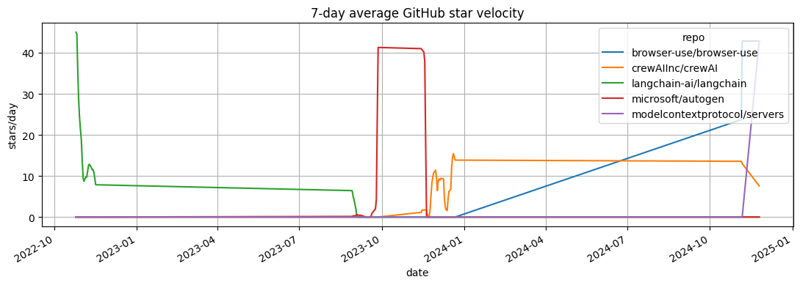
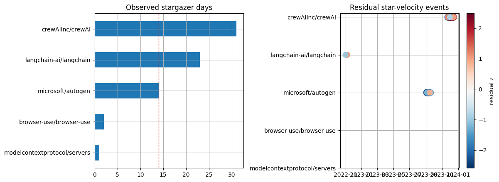

GitHub AI-Agent Star Velocity
Rendered notebook transcript. This page is generated from
examples/notebooks/hot_trends/04_github_ai_agent_star_velocity.ipynb and includes code cells plus captured outputs from the committed notebook.
This notebook uses real GitHub API data to track developer attention for AI-agent and developer-tool repositories.
Stars are a public repository-interest signal for the selected period.
In [1]
from pathlib import Path
import os
import matplotlib.pyplot as plt
import numpy as np
import pandas as pd
from examples.hot_trends.data import (
HotTrendDataError,
append_real_snapshot,
build_arxiv_monthly_counts,
fetch_coingecko_market_chart,
fetch_defillama_stablecoin_chains,
fetch_github_repo_metadata,
fetch_github_stargazers,
fetch_huggingface_models,
fetch_wikipedia_pageviews,
source_audit_table,
)
from examples.hot_trends.decomposition import (
component_summary,
decompose_table,
editorial_priority,
residual_event_table,
)
from examples.hot_trends.scoring import article_publication_phrasing
pd.set_option("display.max_columns", 80)
pd.set_option("display.max_rows", 80)
plt.rcParams.update({"axes.grid": True})
CACHE_DIR = Path("examples/hot_trends/cache")
OUTPUT_DIR = Path("examples/hot_trends/outputs")
CACHE_DIR.mkdir(parents=True, exist_ok=True)
OUTPUT_DIR.mkdir(parents=True, exist_ok=True)
def save_table(df, name):
path = OUTPUT_DIR / f"{name}.csv"
df.to_csv(path, index=False)
print(f"saved: {path.as_posix()}")
1. Select repositories
Use a small list for unauthenticated runs. Set GITHUB_TOKEN for higher rate limits.
In [2]
repos = [
"langchain-ai/langchain",
"microsoft/autogen",
"crewAIInc/crewAI",
"browser-use/browser-use",
"modelcontextprotocol/servers",
]
token = os.environ.get("GITHUB_TOKEN")
pd.DataFrame({"repo": repos})
text/html
| repo | |
|---|---|
| 0 | langchain-ai/langchain |
| 1 | microsoft/autogen |
| 2 | crewAIInc/crewAI |
| 3 | browser-use/browser-use |
| 4 | modelcontextprotocol/servers |
2. Fetch repository metadata
In [3]
metadata_rows = []
for repo in repos:
meta = fetch_github_repo_metadata(repo, token=token)
metadata_rows.append({
"repo": repo,
"stars": meta.get("stargazers_count"),
"forks": meta.get("forks_count"),
"open_issues": meta.get("open_issues_count"),
"pushed_at": meta.get("pushed_at"),
"source": "GitHub REST API",
})
metadata = pd.DataFrame(metadata_rows).sort_values("stars", ascending=False)
metadata
text/html
| repo | stars | forks | open_issues | pushed_at | source | |
|---|---|---|---|---|---|---|
| 0 | langchain-ai/langchain | 137407 | 22730 | 582 | 2026-05-22T18:30:27Z | GitHub REST API |
| 3 | browser-use/browser-use | 95116 | 10714 | 227 | 2026-05-22T18:54:53Z | GitHub REST API |
| 4 | modelcontextprotocol/servers | 86091 | 10787 | 509 | 2026-05-21T18:10:38Z | GitHub REST API |
| 1 | microsoft/autogen | 58296 | 8802 | 845 | 2026-04-15T11:59:09Z | GitHub REST API |
| 2 | crewAIInc/crewAI | 51975 | 7205 | 354 | 2026-05-22T18:36:45Z | GitHub REST API |
3. Fetch stargazer timestamps
The endpoint returns the latest pages by default. For full histories, paginate further or use a scheduled snapshot system.
In [4]
star_rows = []
for repo in repos:
sg = fetch_github_stargazers(repo, pages=3, token=token)
star_rows.append(sg)
stars = pd.concat(star_rows, ignore_index=True)
stars.head(20)
text/html
| repo | starred_at | login | source | data_quality | |
|---|---|---|---|---|---|
| 0 | langchain-ai/langchain | 2022-10-25T15:45:15Z | JohnShahawy | GitHub REST API | public_api_snapshot |
| 1 | langchain-ai/langchain | 2022-10-25T16:47:34Z | davidtsong | GitHub REST API | public_api_snapshot |
| 2 | langchain-ai/langchain | 2022-10-25T16:50:28Z | salomartin | GitHub REST API | public_api_snapshot |
| 3 | langchain-ai/langchain | 2022-10-25T16:57:12Z | sjwhitmore | GitHub REST API | public_api_snapshot |
| 4 | langchain-ai/langchain | 2022-10-25T17:00:55Z | achuthasubhash | GitHub REST API | public_api_snapshot |
| 5 | langchain-ai/langchain | 2022-10-25T17:06:38Z | Agrover112 | GitHub REST API | public_api_snapshot |
| 6 | langchain-ai/langchain | 2022-10-25T17:14:31Z | gemasphi | GitHub REST API | public_api_snapshot |
| 7 | langchain-ai/langchain | 2022-10-25T17:15:00Z | robinsingh1 | GitHub REST API | public_api_snapshot |
| 8 | langchain-ai/langchain | 2022-10-25T17:17:23Z | jvmncs | GitHub REST API | public_api_snapshot |
| 9 | langchain-ai/langchain | 2022-10-25T17:25:58Z | vvonchain | GitHub REST API | public_api_snapshot |
| 10 | langchain-ai/langchain | 2022-10-25T17:28:58Z | dhnanjay | GitHub REST API | public_api_snapshot |
| 11 | langchain-ai/langchain | 2022-10-25T17:43:55Z | igorbrigadir | GitHub REST API | public_api_snapshot |
| 12 | langchain-ai/langchain | 2022-10-25T17:44:25Z | rahular | GitHub REST API | public_api_snapshot |
| 13 | langchain-ai/langchain | 2022-10-25T17:47:37Z | JadenGeller | GitHub REST API | public_api_snapshot |
| 14 | langchain-ai/langchain | 2022-10-25T17:48:45Z | tkersey | GitHub REST API | public_api_snapshot |
| 15 | langchain-ai/langchain | 2022-10-25T17:54:09Z | Banguiskode | GitHub REST API | public_api_snapshot |
| 16 | langchain-ai/langchain | 2022-10-25T17:59:06Z | stanleyjacob | GitHub REST API | public_api_snapshot |
| 17 | langchain-ai/langchain | 2022-10-25T18:05:13Z | orban | GitHub REST API | public_api_snapshot |
| 18 | langchain-ai/langchain | 2022-10-25T18:34:33Z | mgorenstein | GitHub REST API | public_api_snapshot |
| 19 | langchain-ai/langchain | 2022-10-25T18:37:24Z | odagayev | GitHub REST API | public_api_snapshot |
4. Convert stargazer timestamps to daily velocity
In [5]
stars["date"] = pd.to_datetime(stars["starred_at"]).dt.date.astype(str)
daily = stars.groupby(["repo", "date"]).size().reset_index(name="count")
daily.head(20)
text/html
| repo | date | count | |
|---|---|---|---|
| 0 | browser-use/browser-use | 2024-11-05 | 166 |
| 1 | browser-use/browser-use | 2024-11-06 | 134 |
| 2 | crewAIInc/crewAI | 2023-11-14 | 8 |
| 3 | crewAIInc/crewAI | 2023-11-15 | 4 |
| 4 | crewAIInc/crewAI | 2023-11-24 | 13 |
| 5 | crewAIInc/crewAI | 2023-11-25 | 25 |
| 6 | crewAIInc/crewAI | 2023-11-26 | 21 |
| 7 | crewAIInc/crewAI | 2023-11-27 | 10 |
| 8 | crewAIInc/crewAI | 2023-11-28 | 7 |
| 9 | crewAIInc/crewAI | 2023-11-29 | 1 |
| 10 | crewAIInc/crewAI | 2023-11-30 | 3 |
| 11 | crewAIInc/crewAI | 2023-12-01 | 2 |
| 12 | crewAIInc/crewAI | 2023-12-02 | 1 |
| 13 | crewAIInc/crewAI | 2023-12-03 | 37 |
| 14 | crewAIInc/crewAI | 2023-12-04 | 14 |
| 15 | crewAIInc/crewAI | 2023-12-05 | 5 |
| 16 | crewAIInc/crewAI | 2023-12-06 | 4 |
| 17 | crewAIInc/crewAI | 2023-12-07 | 3 |
| 18 | crewAIInc/crewAI | 2023-12-08 | 1 |
| 19 | crewAIInc/crewAI | 2023-12-09 | 1 |
Visualization: GitHub star velocity
The rolling star-velocity chart turns raw stargazer timestamps into a comparable attention signal.
In [6]
star_velocity = daily.copy()
star_velocity["date"] = pd.to_datetime(star_velocity["date"])
velocity_pivot = star_velocity.pivot_table(index="date", columns="repo", values="count", aggfunc="sum").fillna(0).sort_index()
ax = velocity_pivot.rolling(7, min_periods=1).mean().plot(figsize=(11, 4), title="7-day average GitHub star velocity")
ax.set_ylabel("stars/day")
ax.set_xlabel("date")
plt.tight_layout()
plt.show()
image/png

5. Decompose star velocity if enough days exist
In [7]
coverage = source_audit_table(daily, value_col="count", entity_col="repo", time_col="date")
ready = coverage.loc[coverage["observations"] >= 14, "series"].tolist()
if ready:
components = decompose_table(daily[daily["repo"].isin(ready)], entity_col="repo", time_col="date", value_col="count", method="MA_BASELINE", period=7, trend_window=5, transform="log1p")
summary = editorial_priority(component_summary(components, entity_col="repo", time_col="date"), entity_col="repo")
events = residual_event_table(components, entity_col="repo", time_col="date", top_n=20)
else:
components = pd.DataFrame()
summary = pd.DataFrame([{"status": "not_enough_real_stargazer_days", "required": "increase pages or run repeated snapshots"}])
events = pd.DataFrame()
coverage
text/html
| series | first_timestamp | last_timestamp | observations | missing_ratio | min_value | max_value | |
|---|---|---|---|---|---|---|---|
| 0 | browser-use/browser-use | 2024-11-05 00:00:00 | 2024-11-06 00:00:00 | 2 | 0.0 | 134.0 | 166.0 |
| 1 | crewAIInc/crewAI | 2023-11-14 00:00:00 | 2023-12-22 00:00:00 | 31 | 0.0 | 1.0 | 38.0 |
| 2 | langchain-ai/langchain | 2022-10-25 00:00:00 | 2022-11-16 00:00:00 | 23 | 0.0 | 3.0 | 45.0 |
| 3 | microsoft/autogen | 2023-08-29 00:00:00 | 2023-09-27 00:00:00 | 14 | 0.0 | 1.0 | 138.0 |
| 4 | modelcontextprotocol/servers | 2024-11-25 00:00:00 | 2024-11-25 00:00:00 | 1 | 0.0 | 300.0 | 300.0 |
Visualization: GitHub coverage and residual events
Coverage bars show whether there is enough stargazer history for decomposition; the event plot highlights unusually large residual days when available.
In [8]
coverage_plot = coverage.sort_values("observations")
fig, axes = plt.subplots(1, 2, figsize=(12, 4.5))
coverage_plot.plot(kind="barh", x="series", y="observations", ax=axes[0], color="tab:blue", legend=False, title="Observed stargazer days")
axes[0].axvline(14, color="tab:red", linestyle="--", linewidth=1.0)
axes[0].set_ylabel("")
if events.empty:
axes[1].axis("off")
axes[1].set_title("No residual events until coverage threshold is met")
else:
event_plot = events.copy()
event_plot["date"] = pd.to_datetime(event_plot["date"])
repo_order = coverage_plot["series"].tolist()
event_plot["repo_code"] = pd.Categorical(event_plot["repo"], categories=repo_order, ordered=True).codes
sc = axes[1].scatter(event_plot["date"], event_plot["repo_code"], s=50 + event_plot["abs_residual_z"] * 35, c=event_plot["residual_z"], cmap="RdBu_r")
axes[1].set_yticks(range(len(repo_order)))
axes[1].set_yticklabels(repo_order)
axes[1].set_title("Residual star-velocity events")
fig.colorbar(sc, ax=axes[1], label="residual z")
plt.tight_layout()
plt.show()
image/png

In [9]
summary
text/html
| repo | observations | first_timestamp | last_timestamp | trend_last | trend_slope_per_step | cycle_strength_proxy | residual_std | max_abs_residual_z | method | trend_slope_per_step_rank_pct | cycle_strength_proxy_rank_pct | max_abs_residual_z_rank_pct | editorial_priority_score | |
|---|---|---|---|---|---|---|---|---|---|---|---|---|---|---|
| 2 | microsoft/autogen | 14 | 2023-08-29 00:00:00 | 2023-09-27 00:00:00 | 2.523944 | 0.189074 | 0.822358 | 0.608372 | 4.844275 | MA_BASELINE | 1.000000 | 1.000000 | 1.000000 | 1.00 |
| 1 | langchain-ai/langchain | 23 | 2022-10-25 00:00:00 | 2022-11-16 00:00:00 | 1.277376 | -0.021586 | 0.601288 | 0.353917 | 3.217347 | MA_BASELINE | 0.333333 | 0.666667 | 0.666667 | 0.55 |
| 0 | crewAIInc/crewAI | 31 | 2023-11-14 00:00:00 | 2023-12-22 00:00:00 | 1.499108 | 0.002265 | 0.556729 | 0.634456 | 2.080745 | MA_BASELINE | 0.666667 | 0.333333 | 0.333333 | 0.45 |
6. Article-safe interpretation
In [10]
phrasing = article_publication_phrasing()
phrasing
text/html
| draft_claim | evidence_based_phrasing | |
|---|---|---|
| 0 | This trend predicts the next price move. | This trend summarizes the observed public seri... |
| 1 | This model is better because it has more downl... | Downloads are a public adoption proxy and shou... |
| 2 | This repo is winning because stars are rising. | Star velocity measures developer attention, no... |
| 3 | This pageview spike proves importance. | Pageviews measure public attention during the ... |
| 4 | This residual is a buy signal. | This residual marks an event-like deviation fr... |
In [11]
save_table(metadata, "04_github_repo_metadata")
save_table(coverage, "04_github_stargazer_coverage")
save_table(daily, "04_github_star_velocity_daily")
save_table(summary, "04_github_decomposition_or_collection_status")
if not events.empty:
save_table(events, "04_github_residual_events")
save_table(phrasing, "04_github_publication_phrasing")
stdout
saved: examples/hot_trends/outputs/04_github_repo_metadata.csv
saved: examples/hot_trends/outputs/04_github_stargazer_coverage.csv
saved: examples/hot_trends/outputs/04_github_star_velocity_daily.csv
saved: examples/hot_trends/outputs/04_github_decomposition_or_collection_status.csv
saved: examples/hot_trends/outputs/04_github_residual_events.csv
saved: examples/hot_trends/outputs/04_github_publication_phrasing.csv